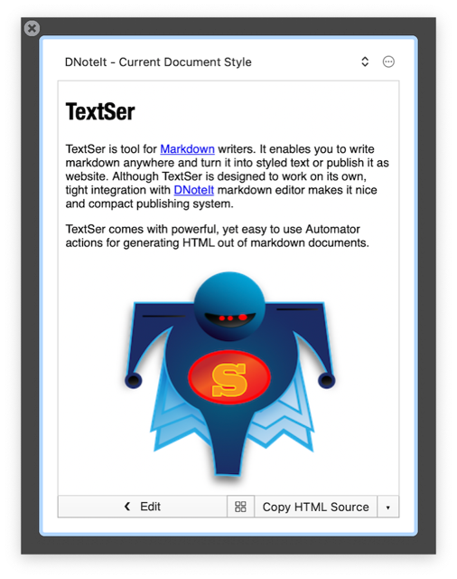
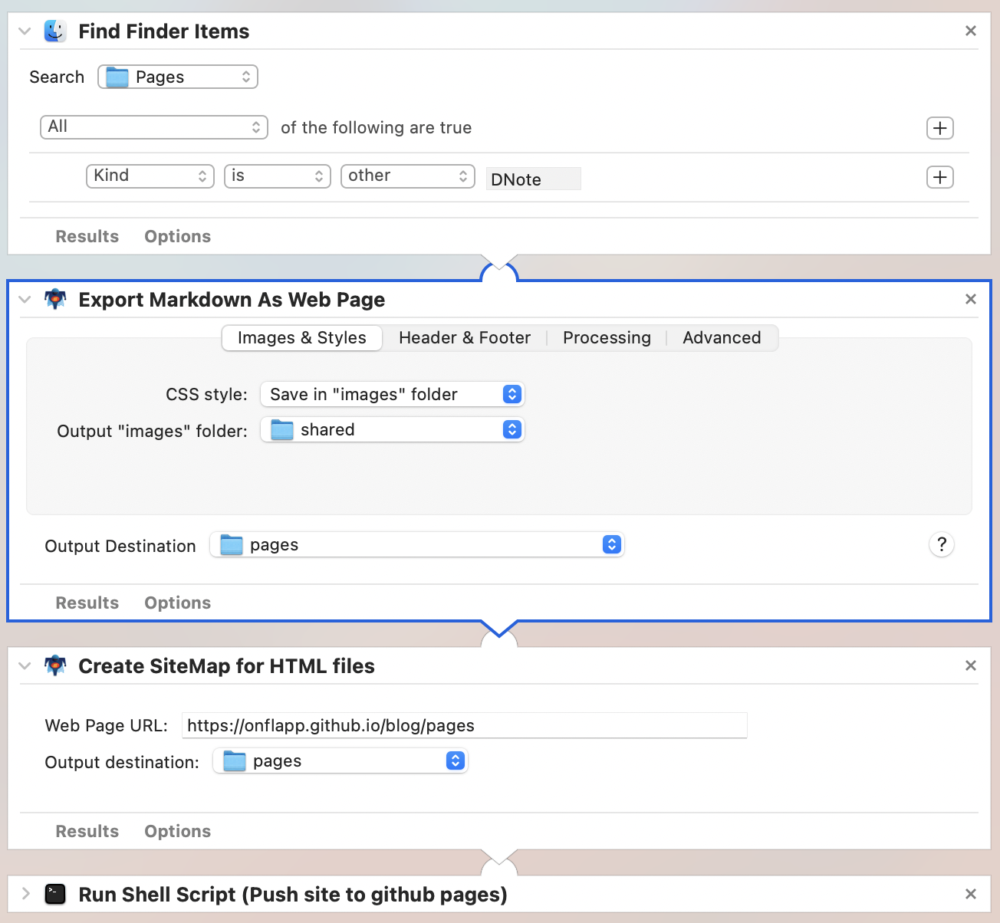

Using TextSer to publish DNoteIt documents
TextSer is tool for Markdown writers. It generates styled text out of a Markdown document. Tight integration with DNoteIt makes it nice and compact publishing system, which is easy to use, yet powerful enough to create web sites.
Publish single document
Use Publish command in DNoteIt’s File menu. TextSer will preview the document in its own window where you will be able to export it to HTML or other formats. TextSer is very configurable and extensible using custom actions and plugins.

Publishing website
Use Export Markdown as Web Page Automator action to generate HTML from collection of DNoteIt documents. The action will output HTML, CSS and image files that you can then process further, for example push to github pages or upload using FTP to your web server.

The workflow has following steps
- find all DNoteIt documents you want to transform
- transform it to HTML
- create site map
- upload the web site to the server (e.g. push it to github pages)